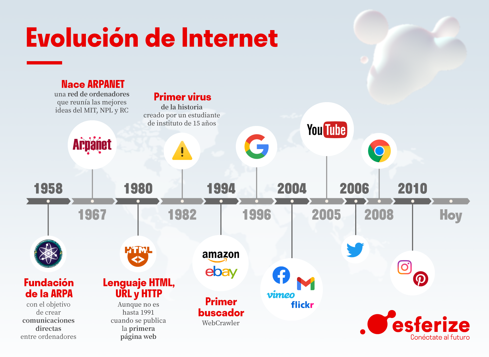

" Bitacora de clase "
01/02/23
Contenido
HTML
Contenido
Lo que hoy aprendi en esta clase fue sobre las etiquetas que pueden haber en HTML y que pueda ser una buena función, también aprendí sobre lo que era HTML5 es estandar porque debe de seguir una variedad de reglas para su buen funcionamiento.
También aprendí sobre que podemos hacer un sencillo codigo en un bloc de notas y que existen varias versiones de HTML solo que cada vez se van mejorando sus funcionamientos y cada vez se hace más fácil. Y cuando nos lance un error para poder resolver el problema debemos de hacer la estructura de manera identada para poder identificar el error y tener buenas practicas para cuando vean nuestro código.

02/02/23
METODOLOGÍAS
Hoy recordamos sobre lo que es una metodología, una metodología es para poder dar una solución de manera practica a alguna problematica ya que nos ayudara a maximizar la eficiencia al momento de estar programando como por ejemplo la Metodología Scrum. También recordamos lo que son las herramientas para poder organizar de una buena manera las actividades y equipos es para tener un mejor orden, como por ejemplo la herramienta Kanba.

GITHUB
Nos enseñamos a subir nuestros códigos y estamos modificando el codigo anterior y a crear repositurios para nuestros trabajos.

09/02/23
LENGUAJE DE DISEÑO CSS
Hoy aprendimos sobre el Lenguaje de Diseño CSS este es utilizado para darle diseño a la página web que estemos desarrollando
El CSS es utilizado mucho para el front-end porque es el encargado de dar diseño y dar estilo a las páginas web por ejemplo, alterando la fuente,color o el tamaño. Al utilizar CSS es una página es como una caja porque cada una de las cajas tiene diferentes diseños y diferentes propiedades en nuestra página web.
También vimos las diferentes etiquetas de estilo con las que cuenta el CSS para que nuestra página se vea más bonita a vista de los demás, vimos que tenemos que hacer como una tipo conexión entre nuestro HTML y el CSS ya que el código del CSS estara en otro documento aparte, asi que se tendra que usar un link que lo conecte con el HTML que estemos utilizando, eso vimos en esta clase.

16/02/23
JavaScript
JavaScript es un lenguaje de programación que los desarrolladores utilizan para hacer páginas web interactivas. Desde actualizar fuentes de redes sociales a mostrar animaciones y mapas interactivos, las funciones de JavaScript pueden mejorar la experiencia del usuario de un sitio web.

20/02/23
Evolución Web
Las páginas web han estado evolucionando desde su creación en el año de 1966, antes las páginas no tenían diseño como ahora todas las páginas eran puras letras el fondo era negro con letras verdes no tenían imagenes ni nada de lo que ahora tienen. Conforme paso el tiempo la web fue evolucionando implementando nuevas funciones como las imagenes o tonos más agradables a la vista. Eso vimos en la clase la hoy la evolución de las páginas web

20/02/23
Creación del Login
En esta clase de hoy vimos como vamos a crear un Login para una página web que se llevara acabo, en está clase vimos los diferentes aspectos que debe de tener una página web para obtener buenos resultados y la página sea funcional. Eso vimos en la clase de hoy y empezamos con el diseño del login.

22/02/23
Actualización del Login
En esta clase de hoy vimos que en HTML no se pueden usar el (if) para hacer un ciclo y debemos de implementar alguna solución para poder poner los municipios en nuestro login de una manera eficiente y no tan complicada. Hoy también hicimos mejoras al login implementando el apartado de Recuperación de contraseña, la página principal es el Login y desde ahi podremos tener acceso al Registro y Recuperación de contraseña
23/02/23
Propuestas para la solución a la Problematica
En esta clase de hoy estuvimos platicando sobre como le podemos dar solución a la problematica de la cafetería, estuvimos viendo las soluciones y las ventajas y desventajas de esas soluciones. Para mejorar el saturamiento de fila en la cafetería a la hora del receso, hicimos una lluvia de ideas entre todos para poder llegar a algo especifico para una solución. Y para ello hicimos un documento donde escribimos las posibles soluciones con sus desventajas y ventajas para platicarlo el lunes 27 de Febrero entre todos.